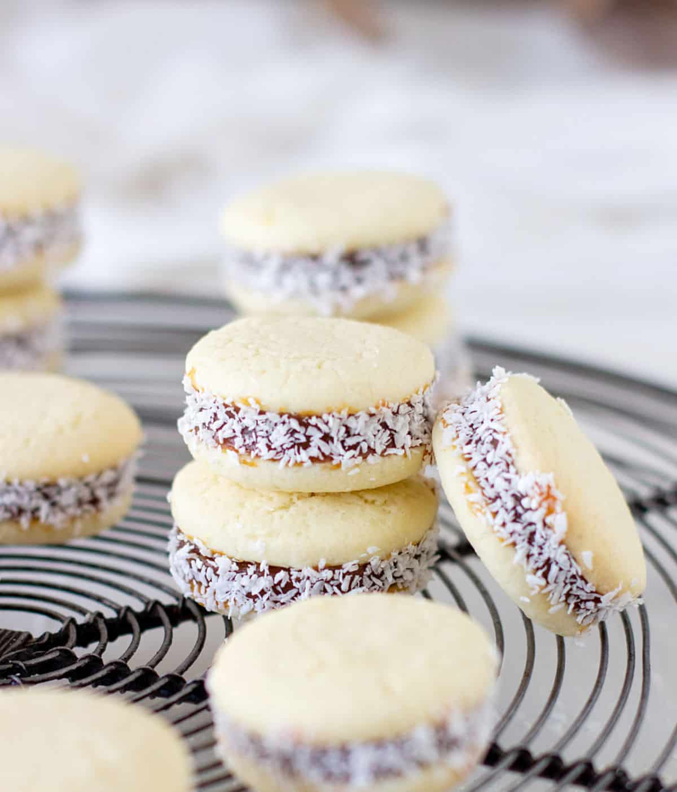

Alfajores

Description
Alfajores are a sweet and delicate cookie that are popular in many countries in South America, particularly in Argentina, Uruguay, and Peru. The cookies are made by sandwiching a layer of dulce de leche, a caramel-like spread made from sweetened condensed milk, between two shortbread-like cookies, which are often made with cornstarch to give them a crumbly texture.
Alfajores are often coated in powdered sugar or grated coconut, and they can also be dipped in chocolate. The cookie itself is not overly sweet, allowing the rich and decadent flavor of the dulce de leche to take center stage. Many variations of the recipe exist, with some including nuts, honey, or spices.
Alfajores are often served as a dessert or snack, and they are a popular gift item in South America, especially during the holidays. They are also commonly found in bakeries and cafes throughout the region. Some people even consider alfajores to be a symbol of South American cuisine, and they are highly sought after by those who have tasted their deliciousness.
Making alfajores can be a labor-intensive process, as the cookies must be baked, filled with dulce de leche, and then coated in sugar or coconut. However, many people find the effort to be worth it, as alfajores are a beloved treat that is perfect for any occasion.
Ingredients
- 1 1/2 cups (200g) all-purpose flour
- 2 1/8 cups (300g) cornstarch
- 2 teaspoons baking powder
- 1/2 teaspoon baking soda
- 1 and 3/4 sticks (200g) unsalted butter, at room temperature
- 3/4 cup (150g) granulated sugar or 1 1/4 cups (150g) powdered sugar
- 3 large egg yolks
- 2 teaspoons vanilla extract
- 350 g (12 oz.) dulce de leche, for filling
- 1/2 cup unsweetened shredded or desiccated coconut , for rolling
Preperetions
- In a medium bowl, sift together flour, cornstarch, baking powder, and baking soda. Set aside.
- In a mixer bowl fitted with the paddle attachment, beat butter and sugar on medium speed until light and fluffy, about 3 minutes. Beat in egg yolks and vanilla extract just until combined. Reduce speed to low. Add the flour mixture and beat just until combined. Do not overmix or the cookies will turn out tough.
- Form the dough into a ball, then flatten slightly to form a disc. Wrap with plastic wrap and refrigerate for 1-2 hours, until firm enough to roll.
- If you don’t want to use the dough right away, you can refrigerate it for up to 3 days or freeze it for up to a month, then thaw it overnight in the fridge.
- Take the dough out of the fridge and let it sit on the counter for a few minutes to soften slightly for easy rolling. On a lightly floured surface (or between 2 pieces of parchment paper), roll the dough to a 1/8 or 1/4-inch (3-5mm) thickness. Cut out into rounds using a 2-inch (5cm) fluted or round cookie cutter, and place the cookies on baking sheets lined with parchment paper.
- If at any point the dough becomes too warm, place it back into the fridge for a few minutes. Re-roll the remaining scraps and repeat. Place sheets with cookies in the freezer or fridge for at least 15 minutes, until firm, so that they will be less prone to spreading.
- Preheat oven to 350F/180C. Bake for 7-10 minutes, or until cookies appear golden brown at the edges. Allow cookies to cool in the pan for 10 minutes, then gently transfer to a wire rack to cool completely.
- Spread the bottom half of the cookies with dulce de leche (about a teaspoon). Sandwich together with remaining cookies, pressing slightly so that the caramel oozes out the sides. Roll the sides in shredded coconut.
- Store cookies at room temperature in an airtight container for up to a week or freeze for up to 2 months. To thaw, leave on the counter, still covered, or overnight in the fridge.